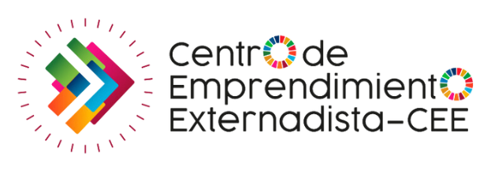
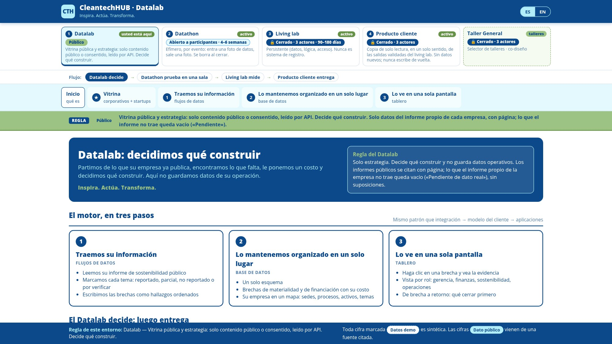
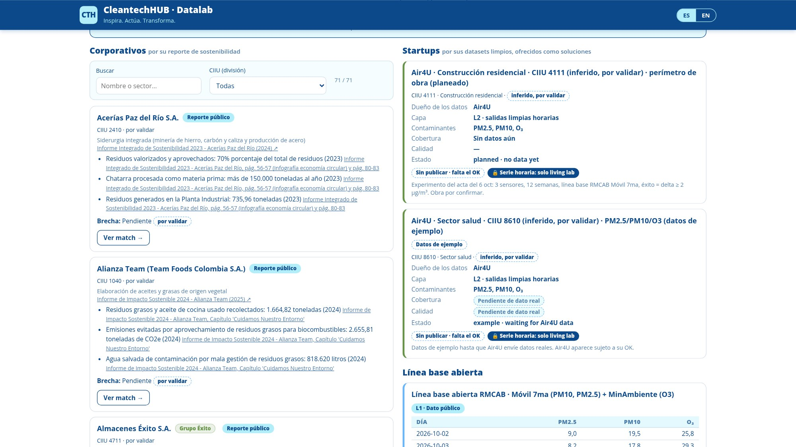
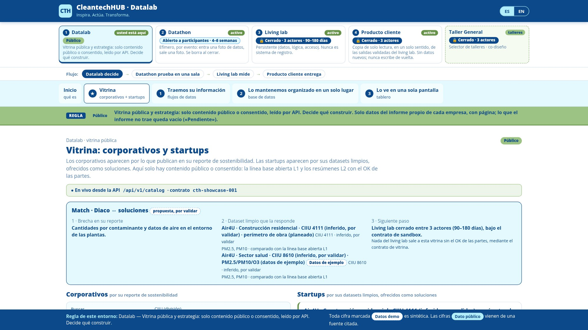
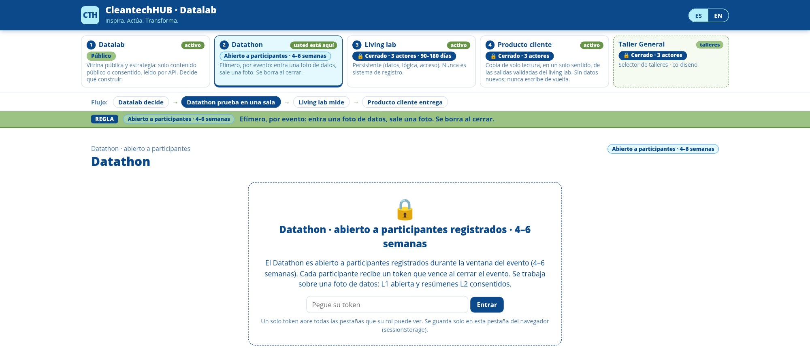
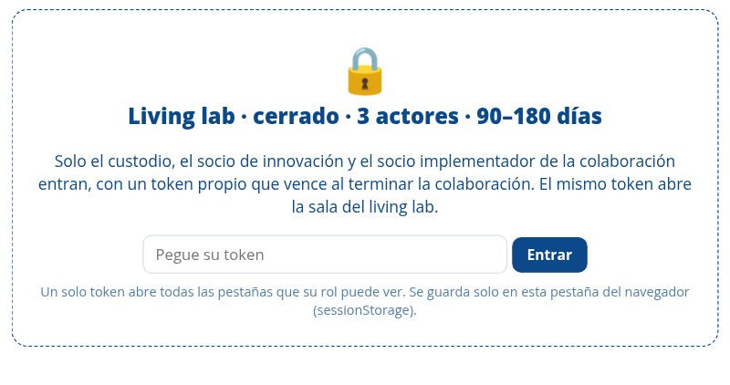
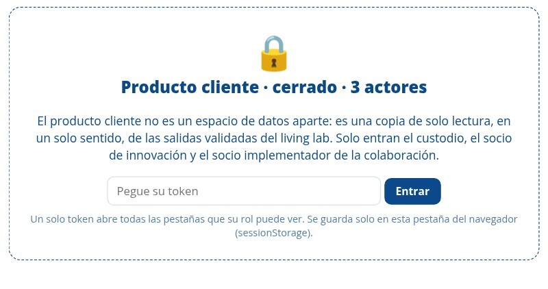
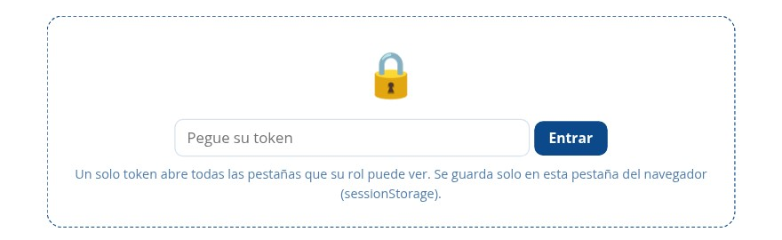

Inspira. Actúa. Transforma.
El tamaño del proyecto: actores, alianza y Datathon
Miércoles 14 oct 2026 · 10:00 · Universidad Externado de Colombia, Edificio H
Marlene Díaz · Centro de Emprendimiento Externadista (CEE)
Diego Alejandro Díaz Malagón · Coordinador de Innovación
Gideon Blaauw
CleantechHUB · CTH Foundation
Norte compartido
Desarrollar flujos de digitalización que aceleren el desarrollo empresarial en clima, desde la Universidad y para América Latina.
Acuerdo de colaboración Fundación CleantechHUB × Universidad Externado, firmado el 3 jul 2024
Frentes del Otrosí: Datathon, Climate Data Week, Data Lab e Investigación, más HUB REIN Colombia
Entornos del Datalab ya en vivo: vitrina, Datathon, Living lab, Producto cliente y Taller
Corporativos colombianos en la vitrina, leídos desde su reporte de sostenibilidad
Investigación, academia y cupo de estudiantes y emprendedores.
Coordinación de Innovación: puente con gobierno y Estado.
Método, stack de datos abierto (n8n · Baserow · Metabase), Academy y Datathon.
Datalab en vivo: datalab.cleantechhub.net
Datos climáticos y de observación de la Tierra al servicio de la investigación sobre el entorno de negocios en LATAM.
Nombre «Observatorio» y alcance de HUB REIN Colombia por validar con CEE; no figuran en el acuerdo de 2024Primero negocios digitales; después datos e IA para startups climáticas.
Ejemplos ilustrativos: Air4U (Externado Emprende+) y Biotalega.
Biotalega: página oficial por confirmar; ambos solo como ejemplo71 empresas colombianas en la vitrina del Datalab, leídas desde su propio reporte de sostenibilidad, con código CIIU.
Sus brechas se convierten en retos para la Datathon.
Atenea · APC Colombia · Innpulsa · Davivienda · SENA
Otros mencionados: CAF (público) y ESRI (capa geo).
Ningún aliado ha confirmado participación; roles exactos de APC/CAF/ESRI por mapearAcuerdo de colaboración Fundación CleantechHUB × Universidad Externado, firmado el 3 jul 2024 por cinco años.
Amplía el alcance sin cambiar el plazo: Datathon, Climate Data Week, Data Lab e Investigación, y suma HUB REIN Colombia.
Estado del Otrosí: sin acta del 1 oct; confirmar si ya está en trámite contractual internoDos rieles transversales: Programas (de la idea al mercado) y Finanzas (cómo se financian las acciones conjuntas).
Numeración de cláusulas: usar la del texto final del Otrosí (borrador: Investigación cl. 1.5; Programas cl. 1.2/1.4; Finanzas cl. QUINTA)Sprint de datos climáticos: estudiantes y emprendedores construyen sobre datos reales.
Semana de datos climáticos en Bogotá que conecta Universidad, startups, corporativos y aliados.
Laboratorio aplicado: lo que nace en la Datathon se mide en un Living lab con reglas de acceso.
Línea CEE sobre el entorno de negocios en LATAM y los modelos de negocio que habilitan los datos.
Nodo colombiano para conectar el trabajo de la alianza con una red internacional de innovación.
Propósito
Que estudiantes y emprendedores conviertan datos en flujos digitales que aceleran negocios reales, y que la Universidad lidere ese aprendizaje.
Pasar de Excel y WhatsApp a una tabla viva, un flujo automatizado y un tablero.
Sensores, APIs y modelos. Ejemplos ilustrativos: Air4U (calidad del aire) y Biotalega.
Abierto a participantes registrados durante una ventana de 4–6 semanas. Entra una foto de datos, sale una foto, y se borra al cerrar.
Entrevista y diagnóstico con la startup: define el foco del reto.
De Excel o WhatsApp a una tabla viva y un flujo digital.
n8n · Baserow
Dataset gobernado, sin datos personales, listo para construir.
Tarjeta de datos · CSV / API
La Universidad construye; la startup es dueña del reto.
Prototipo + demo

Decisiones en pantalla con KPIs acordados, no un PDF.
Metabase
Regla: el tablero se alimenta con datos reales. Si falla un paso, no se inventa: se usa un CSV gobernado o se aplaza.
Ritmo propuesto: unas semanas de preparación con la startup, luego la Datathon y un puente opcional al Data Lab.
Duración exacta (borrador: 3 semanas PRE + 2 días) y KPIs del tablero por acordardatalab.cleantechhub.net · vista pública, captura del 8 oct 2026
Estrategia: solo contenido público o consentido. Decide qué construir.
PúblicoEfímero, por evento: entra una foto de datos, sale una foto.
Abierto a participantes · 4–6 semanasPersistente (datos, lógica, acceso); nunca es sistema de registro.
Cerrado · 3 actores · 90–180 díasCopia de solo lectura de las salidas validadas del Living lab.
Cerrado · 3 actoresSelector de talleres y co-diseño.
Cerrado · 3 actoresCada uno aparece por lo que publica en su reporte de sostenibilidad, con página citada y código CIIU para cruzar sectores.

Ejemplo en vivo: la brecha de calidad del aire de un corporativo se cruza con los datasets de Air4U. Es una propuesta por validar.

Gobernanza: CTH Foundation es custodio-intermediario: muestra, no se adueña. Lo que el reporte no trae queda vacío («Pendiente de dato real»), sin suposiciones. Diseñado para alinearse con la Ley 1581 de 2012 y el Data Governance Act de la UE (no es una certificación).

Datathon · abierto a participantes registrados · 4–6 semanas

Living lab · cerrado · 3 actores · 90–180 días

Producto cliente · cerrado · 3 actores

Taller General · cerrado · 3 actores
Solo la vitrina es pública. Cada entorno se abre con un token según el rol; en la Datathon el token vence al cerrar el evento.
Experimento del acta del taller del 6 oct:
Hoy a las 14:00: avance y Laboratorio Vivo con clientes potenciales de Air4U.
Obra por confirmar; datos reales de Air4U pendientes (sesión técnica 9 oct)GEN Global Startup Huddle, con el CEE como anfitrión; CTH invitado como mentor corporativo.
Taller Air4U en el Datalab: experimento de calidad del aire definido.
Esta reunión: actores, alianza, Datathon y Otrosí.
14:00: Laboratorio Vivo Air4U.
Datathon en la Semana Global del Emprendimiento.
Día exacto (¿18 nov?)Climate Data Week Bogotá.
Fecha y sedeRevisión del texto del Otrosí y calendario de la Datathon.
Fecha de la siguiente reunión; seguimiento MinCiencias / OTRI tras la reunión de Marlene del 7 octAtenea · APC Colombia · Innpulsa · Davivienda · SENA
Por convocar; ninguno confirmado aún.
Ningún aliado ha confirmado; MinCiencias / OTRI también por explorarInspira. Actúa. Transforma.
Una alianza Universidad–CleantechHUB que convierte datos en negocios climáticos, empezando por la Datathon de noviembre.
Gideon Blaauw · CleantechHUB · CTH Foundation
Gracias, Marlene y Diego Alejandro.
← → · espacio · clic